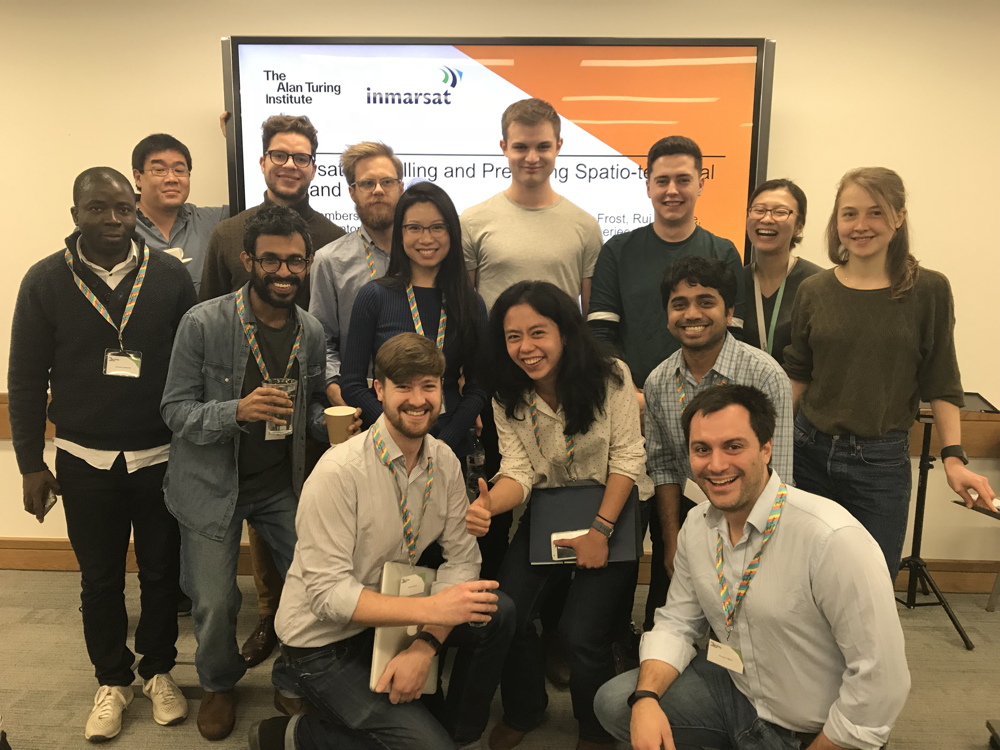
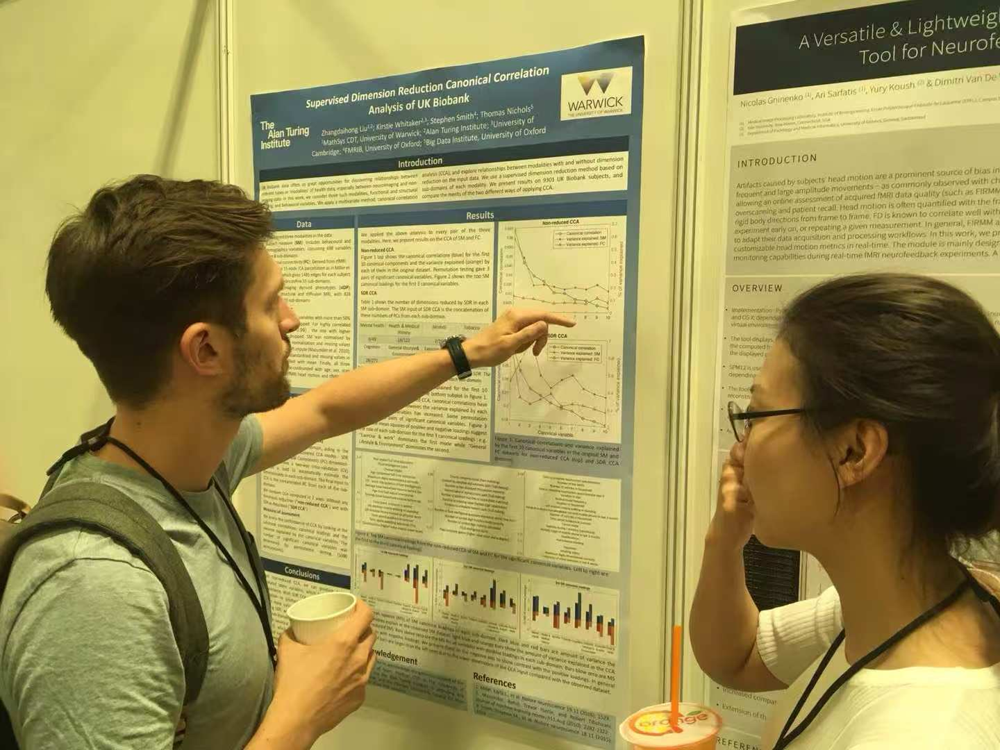
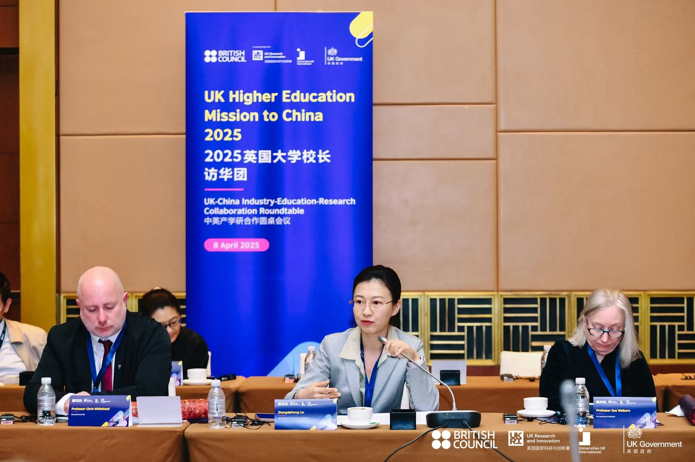
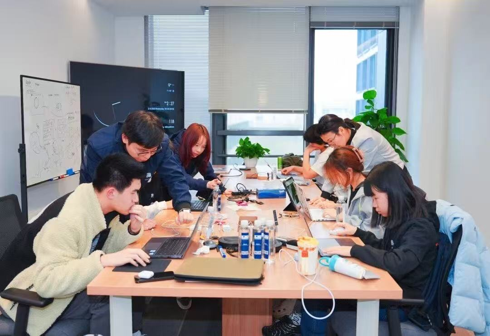

Invited Talks and Lectures
- Jul 2024 Invited Lecture at Shandong University: A Summer Course on Image Recognition and Machine Learning
- Jun 2024 Invited Talk at The School of Public Health and Preventive Medicine, Monash University (Suzhou Campus): ‘AI in Healthcare: Applications of EHR and Physiological Data’
- Apr 2024 Invited Lecture at the Department of Environmental Science, Duke University (Kunshan Campus)
- Jul 2023 Invited Talk at the Innovation and Entrepreneurship Summer School of Shandong University
- Feb 2022 Invited Talk at the Shandong National Center for Applied Mathematics: ‘From Latent Factor Models To Deep Neural Networks, A Journey From Neuroimaging To Electronic Health Records’
- Jul 2021 Invited Talk at the Innovation and Entrepreneurship Summer School of Shandong University
Conferences, Meetings and Study Groups
- Oct 2023 IEEE-EMBS International Conference on Biomedical and Health Informatics (IEEE BHI 2023): Machine Learning-based Research on Care-Service Strategies of Elderly Care Institutions during COVID-19. Authors: Liu, J.; Liu, C.; Liu, Z.∗; Yang, Y. (Poster presentation).
- May 2023 Chinese Biomedical Engineering Conference and Innovation in Healthcare Summit (BME2023): Prediction of Metabolic Syndrome based on Machine Learning Models. Authors: Liu, C.; Liu, Z.∗; Yang, Y.∗. (Oral presentation).
- Jun 2018 Organization for Human Brain Mapping Annual Meeting: Supervised Dimension Reduction Canonical Correlation Analysis of UK Biobank. Authors: Liu, Z., Smith, S.M.; Nichols, T.E. doi:10.6084/m9.figshare.6741242.v1. (Poster presentation)
Supported by grants from the Alan Turing Institute, MathSys CDT at University of Warwick and Guarantors of Brain. - Dec 2017 Facilitator of The Alan Turing Institute Data Study Group, London, UK
Project: Modelling and predicting spatio-temporal demand with Inmarsat.
http://doi.org/10.5281/zenodo.1418400 - Sep 2017 European Study Group with Industry 130. University of Warwick, UK.
Project: Measuring Vibrations from Video Feeds with DSTL. - Jun 2017 Organization for Human Brain Mapping Annual Meeting: Improving Stability of Imaging-Behavioral CCA with Supervised Dimension Reduction. (Poster presentation)
Supported by grants from the MathSys CDT at University of Warwick and Guarantors of Brain. - May 2017 The Alan Turing Institute Data Study Group, London, UK
Project: Clustering of mobile game users and prediction of cluster transition with Samsung. - Apr 2016 European Study Group with Industry 116. Durham University, UK.
Project: Understanding the accuracy of pre-symptomatic diagnosis of sepsis with DSTL.
https://dro.dur.ac.uk/19472/1/19472.pdf - May 2016 EPSRC meeting: Structured Healthcare Data Mining for Neuroscience Patient Stratification and New Therapeutic Target Discovery.
- Nov 2015 Pancreatic Society Annual Meeting: Analysis of the HES database reveals a dramatic reduction in 90-day mortality following pancreaticoduodenectomy over the last 12 years. (Abstract accepted).
* indicates the corresponding author.
Teachings & Supervisions
- 2020-2025: Co-supervised/mentored 9 undergradate and postgraduate students at Beihang University, Nanjing University, Xi’an Jiao Tong University, The University of Electronic Science and Technology of China, Monash University, Fudan University, Shandong Unviersity and Shanghai Jiao Tong University.
- OSCAR Generation Outreach Programme - AI for Healthcare (2023, 2024 and 2025): 10-day crash course; taught over 30 secondary school students.
- Modern Statistical Methods (2019): Led lab sessions for postgraduate students at the Big Data Institute, University of Oxford.
- Quantitative Analysis for Management I & II (2016-2019): Taught tutorials for first-year undergraduate students in the Business School, University of Warwick.
- C++ for Quantitative Finance (2016-2017): Led lab sessions for postgraduate students in the Business School, University of Warwick.
- Digital Communication and Signal Processing: Taught tutorials for second-year undergraduate students in the Department of Computer Science, University of Warwick.
Some Visualisations 😊
Facilitating the DSG at The Alan Turing Institute.
Poster presentation at OHBM2018.
Round table discussion at 2025 UK-China Industry-Education-Research Collaboration.
Coaching students at OSCAR Generation.